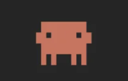

第 19 招
/
CLAUDE CODE
技能创建
Skill Creator
·
/skills
.claude/skills/cyxj-poster/SKILL.md
---
name: cyxj-poster
description: 一句话生成大师级海报，
33+ 设计师风格 + 10 种摄影。
---
# Cyxj Poster
触发：「画个海报」「做个封面」
·读 brief → 选风格 → 生成 prompt
·调用 Gemini API 绘图
·输出 1080×1080 / 1920×1080

↗之前讲过
📺完整指南· 11:24
特定的事情
加水印
截图打码
公众号排版
字幕错别字
特定的方式
⚙️
SKILL.md
自动完成
✓
水印 ✓
✓
打码 ✓
✓
排版 ✓
✓
修字 ✓

让它去做
Skill it · Forget it